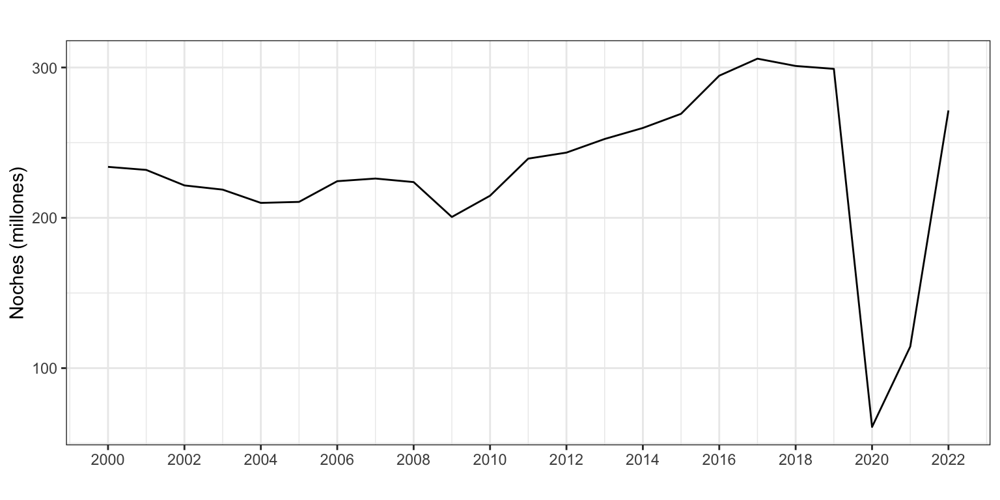
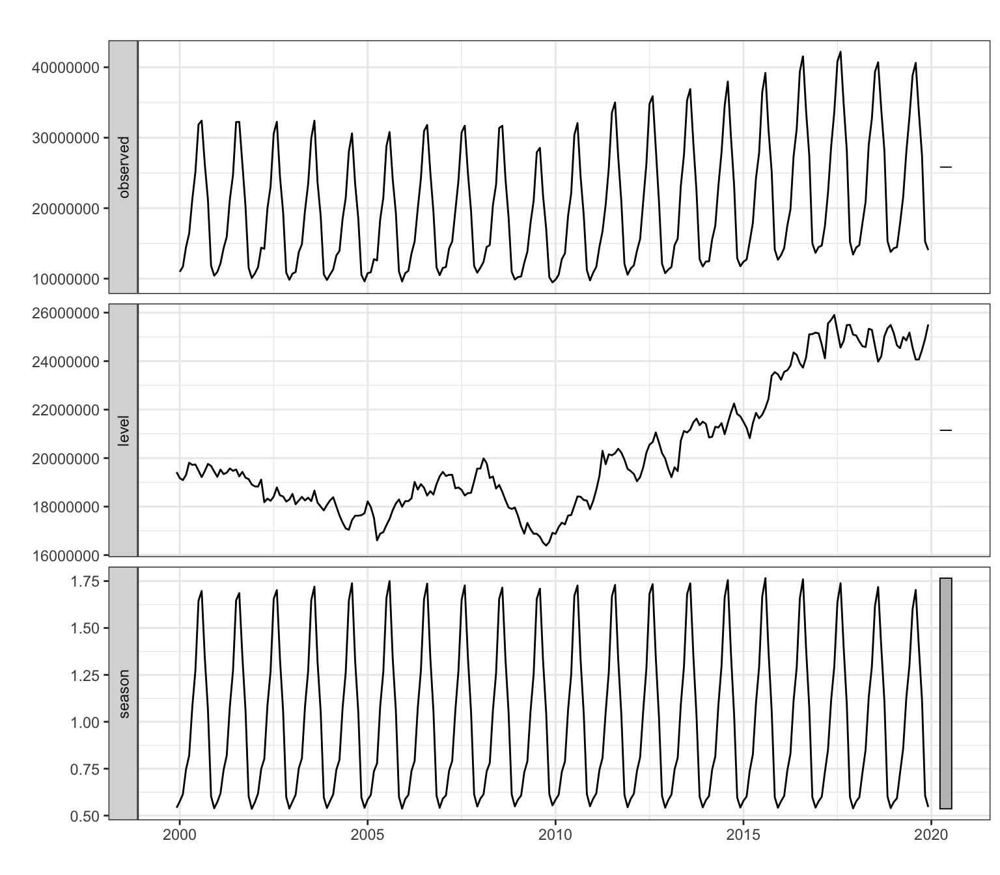
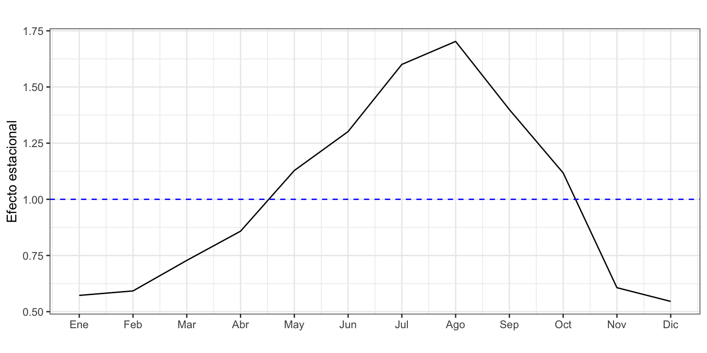
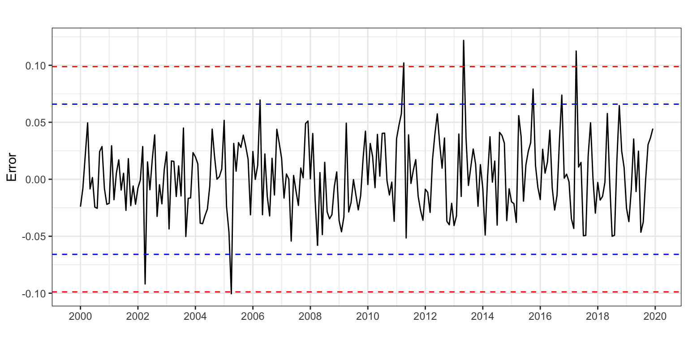
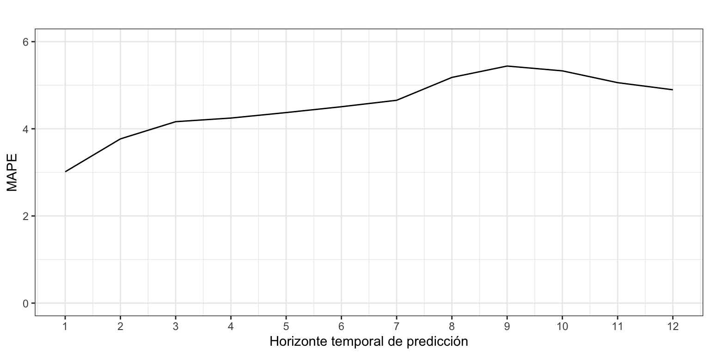
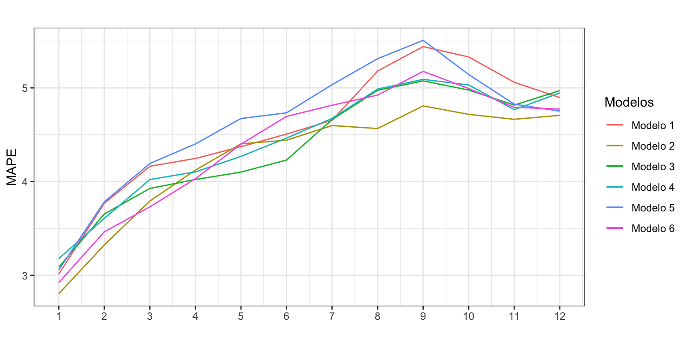

Pernoctaciones en alojamientos turísticos de turistas extranjeros
Alisado exponencial
1 Introducción
Consideremos de nuevo la serie temporal correspondiente al número de pernoctaciones que los turistas extranjeros realizan en España en alojamientos turísticos autorizados (que llamaremos Pernoctaciones en adelante). Esta serie está disponible en Eurostat desde enero de 2000 hasta diciembre de 2019, un total de 20 años y 240 observaciones.
La serie presenta tendencia decreciente hasta finales de la primera década del presente siglo y luego creciente hasta los dos últimos años. La estacionalidad de orden 12 esta determinada por la temperatura. El esquema es multiplicativo.
Pernoctaciones <- read.csv2("./series/Pernoctaciones.csv",
header = TRUE)
Pernoctaciones <- ts(Pernoctaciones[, 2],
start = 2000,
frequency = 12)autoplot(Pernoctaciones/1000000,
xlab = "",
ylab = "Noches (millones)",
main = "") +
scale_x_continuous(breaks= seq(2000, 2020, 2)) 
La serie de Pernoctaciones anualizada (y en millones de noches) sería
PernoctacionesAnual <- aggregate(Pernoctaciones/1000000, FUN = sum)
autoplot(PernoctacionesAnual,
xlab = "",
ylab = "Noches (millones)",
main = "") +
scale_x_continuous(breaks= seq(2000, 2020, 2)) 
2 Ajuste por alisado exponencial de las Pernoctaciones anuales
Vamos a aplicar la metodología de alisado exponencial a la serie de pernoctaciones anuales.
PernoctacionesAnualEts <- ets(PernoctacionesAnual)
summary(PernoctacionesAnualEts) ETS(A,N,N)
Call:
ets(y = PernoctacionesAnual)
Smoothing parameters:
alpha = 0.9999
Initial states:
l = 233.8899
sigma: 12.4328
AIC AICc BIC
164.6208 166.1208 167.6080
Training set error measures:
ME RMSE MAE MPE MAPE MASE ACF1
Training set 3.260448 11.79475 8.892639 1.105104 3.695004 0.9500814 0.2705811Si se estima el modelo sin imponer ninguna restricción, ets identifica como modelo óptimo ETS(A,N,N) donde el parámetro \(\alpha\) es igual a 1. Es decir, el mejor modelo de alisado corresponde al método ingenuo I con error aditivo: \(y_{t+1} = y_t + \varepsilon_{t+1}\), visto ya en el ejemplo del tema 3. El error porcentual cometido (3.7%) es similar al estimado para el método ingenuo I (3.9%). La diferencia se debe a que \(\alpha\) no es exactamente 1.
Las previsiones para los próximos cinco años serían
forecast(PernoctacionesAnualEts,
h = 5,
level = 95) Point Forecast Lo 95 Hi 95
2020 299.0923 274.7246 323.4601
2021 299.0923 264.6328 333.5518
2022 299.0923 256.8890 341.2957
2023 299.0923 250.3605 347.8242
2024 299.0923 244.6087 353.5759Para la serie anual, aunque se amplíe el menú de métodos, no se encuentra ninguno mejor que el más sencillo: predecir repitiendo la última observación.
3 Pernoctaciones mensuales
Vamos ahora a aplicar la metodología de alisado exponencial a la serie mensual de pernoctaciones.
3.1 Ajuste por alisado exponencial
Si se estima el modelo sin imponer ninguna restricción, ets identifica como modelo óptimo ETS(M,N,M).
PernoctacionesEts <- ets(Pernoctaciones)
summary(PernoctacionesEts) ETS(M,N,M)
Call:
ets(y = Pernoctaciones)
Smoothing parameters:
alpha = 0.5303
gamma = 0.2397
Initial states:
l = 19423762.6337
s = 0.5419 0.6044 1.0578 1.3327 1.7077 1.6555
1.2735 1.0803 0.8096 0.7428 0.615 0.5788
sigma: 0.034
AIC AICc BIC
7740.748 7742.890 7792.957
Training set error measures:
ME RMSE MAE MPE MAPE MASE ACF1
Training set 50058.34 727644.8 539050 0.1356775 2.606948 0.5925429 0.1478231El modelo estimado no tiene pendiente, y tiene estacionalidad y residuo multiplicativos: \[y_{t+1} = l_t \cdot s_{t+1-m} \cdot (1 + \varepsilon_{t+1}).\]
El valor de \(\alpha\) indica que el nivel de la serie ha ido variando lentamente en el tiempo. El valor de \(\gamma\) relativamente bajo indica que la componente estacional ha evolucionado muy poco con el paso de los años. (Véase Figura 3.)
autoplot(PernoctacionesEts,
xlab = "",
main = "")
La calidad del ajuste es bastante buena, con un MAPE de 2.6% y un RMSE de 728 mil pernoctaciones (o 539 si usamos el MAE). Además, según el MASE, el modelo de alisado exponencial supone una mejora del 41% respecto del método ingenuo con estacionalidad, que ya usamos para Pernoctaciones y tenía un MAPE del 4.6%. Parece que para la serie mensual el método de Alisado si supone una mejora notable en la calidad del ajuste respecto del método más sencillo.
Los últimos valores estimados del nivel y la estacionalidad, que corresponden a diciembre de 2019, nos permiten mostrar gráficamente la componente estacional más reciente (Figura 4).
TT <- nrow(PernoctacionesEts$states)
PernoctacionesEts$states[TT,] l s1 s2 s3 s4 s5
25512327.37 0.55 0.61 1.12 1.40 1.70
s6 s7 s8 s9 s10 s11
1.60 1.30 1.13 0.86 0.73 0.59
s12
0.57 componenteEstacional <- PernoctacionesEts$states[TT, 13:2]
ggplot() +
geom_line(aes(x = 1:12, y = componenteEstacional)) +
geom_hline(yintercept = 1, colour = "blue", lty = 2) +
ggtitle("") +
xlab("") +
ylab("Efecto estacional") +
scale_x_continuous(breaks= 1:12,
labels = c("Ene", "Feb", "Mar", "Abr", "May", "Jun",
"Jul", "Ago", "Sep", "Oct", "Nov", "Dic")) 
El nivel de las pernoctaciones en diciembre de 2019 (última observación) es de 25.5 millones de noches. El mayor número de pernoctaciones dentro del año tiene lugar en verano, en los meses de julio y agosto. En concreto, destaca el mes agosto con un incremento del 70% (s5) en las pernoctaciones respecto de la media anual. Las pernoctaciones en invierno bajan drásticamente respecto de la media anual, observándose en diciembre un 45% menos de pernoctaciones (s1). El efecto estacional estimado por el método de alisado es muy similar al estimado durante la descriptiva de la serie.
3.2 Predicción
Si pedimos los valores de predicción y su intervalo de confianza al 95% para los próximos tres años, tenemos (numéricamente sólo se muestra el primer año):
PernoctacionesEtsPre <- forecast(PernoctacionesEts,
h = 36,
level = 95)
PernoctacionesEtsPre Point Forecast Lo 95 Hi 95
Jan 2020 14603125 13630775 15575475
Feb 2020 15109537 13970636 16248438
Mar 2020 18575400 17029060 20121741
Apr 2020 21893628 19913635 23873620
May 2020 28781920 25987245 31576594
Jun 2020 33207095 29775705 36638484
Jul 2020 40832285 36372817 45291753
Aug 2020 43442634 38455577 48429690
Sep 2020 35699807 31411510 39988105
Oct 2020 28511154 24940956 32081352
Nov 2020 15479002 13464828 17493176
Dec 2020 13920455 12043305 15797604autoplot(PernoctacionesEtsPre,
xlab = "",
ylab = "Casos",
main = "",
PI = FALSE)
Las predicciones no muestran tendencia. (Véase Figura 5.)
3.3 Análisis del error
La Figura 6 muestra el residuo del modelo.
error <- residuals(PernoctacionesEts)
sderror <- sd(error)
autoplot(error,
xlab = "",
ylab = "Error",
main = "",
colour = "black") +
geom_hline(yintercept = c(-3, -2, 2 ,3)*sderror,
colour = c("red", "blue", "blue", "red"), lty = 2) +
scale_x_continuous(breaks= seq(2000, 2020, 2)) 
Se observan cuatro meses en los que el residuo supera las tres desviaciones típicas: abril de 2005, 2011 y 2017, y mayo de 2013. Además, en abril de 2002 el residuo está cercano a las tres desviaciones típicas. La causa de los errores negativos elevados en abril de 2002 y 2005 es que la Semana Santa cayó en marzo, de forma que el turismo de Semana Santa se trasladó ese mes y en abril hubo menos pernoctaciones de las esperadas.
3.4 Validación
Ya hemos visto que el modelo comete un error próximo al 2.6%. Este valor es la estimación del error en la previsión intramuestral y a un periodo vista. A fin de poder estimar mejor la capacidad predictiva del modelo vamos a estimar el error de previsión extramuestral según el horizonte temporal.
Asumimos que se precisan diez años para hacer una buena estimación, \(k=120\), y que el horizonte temporal es un año, \(h = 12\) meses.
k <- 120
h <- 12
TT <- length(Pernoctaciones)
s <- TT - k - h
mapeAlisado <- matrix(NA, s + 1, h)
for (i in 0:s) {
train.set <- subset(Pernoctaciones, start = i + 1, end = i + k)
test.set <- subset(Pernoctaciones, start = i + k + 1, end = i + k + h)
fit <- ets(train.set, model = "MNM")
fcast<-forecast(fit, h = h)
mapeAlisado[i + 1,] <- 100*abs(test.set - fcast$mean)/test.set
}
errorAlisado <- colMeans(mapeAlisado)
errorAlisado [1] 3.013355 3.768883 4.163453 4.246792 4.372550 4.506715 4.654520 5.179270
[9] 5.440347 5.329751 5.059357 4.895968ggplot() +
geom_line(aes(x = 1:12, y = errorAlisado)) +
ggtitle("") +
xlab("Horizonte temporal de predicción") +
ylab("MAPE") +
ylim(0, 6) +
scale_x_continuous(breaks= 1:12)
La Figura 7 muestra el error de previsión extramuestral según el horizonte de previsión. Se observa como para horizontes de predicción de uno a nueve meses el error de predicción aumenta según aumenta el horizonte de predicción, pasando del 3% para predicciones a un mes vista hasta el 5.4% para predicciones a nueve meses vista.
Sin embargo, para previsiones a más largo plazo el error de predicción decrece, hasta situarse en el 4.9% en las previsiones a un año vista.
4 Modelos alternativos
¿Podemos reducir el error extramuestral de previsión si cambiamos las opciones por defecto de ets o la serie a analizar? Por ejemplo, ¿mejoramos si aplicamos el método de alisado sobre el logaritmo de la serie o usamos el criterio de minimizar el error de las previsiones a dos meses vista, o trabajamos con las pernoctaciones por día?
La Tabla 1 muestra seis modelos alternativos para estimar y predecir la serie, donde el Modelo 1 sería el estudiado en el epígrafe previo.
| Modelo | Transformación | Especificación | Método estimación |
|---|---|---|---|
| 1 | Ninguna | MAM | Máxima verosimilitud |
| 2 | Ninguna | MAM | Mínimo error en previsiones a 2 periodos vista |
| 3 | Logaritmo | AAA | Máxima verosimilitud |
| 4 | Logaritmo | AAA | Mínimo error en previsiones a 2 periodos vista |
| 5 | Pernoctaciones por día | MAM | Máxima verosimilitud |
| 6 | Pernoctaciones por día | MAM | Mínimo error en previsiones a 2 periodos vista |
En concreto los comandos utilizados han sido:
- Modelo 1:
ets(x, model = "MNM") - Modelo 2:
ets(x, model = "MNM", opt.crit = "amse", nmse = 2) - Modelo 3:
ets(x, model = "ANA", lambda = 0) - Modelo 4:
ets(x, model = "ANA", lambda = 0, opt.crit = "amse", nmse = 2) - Modelo 5:
ets(x/monthdays(x), model = "MNM") - Modelo 6:
ets(x/monthdays(x), model = "MNM", opt.crit = "amse", nmse = 2)
La Figura 8 muestra el error de previsión extramuestral según el horizonte de previsión para los seis modelos.

De la Figura 8 deducimos que aunque todos los métodos resultan razonablemente equivalentes en el corto y largo plazo, en el plazo medio las diferencias pueden ser significativas: la mayor diferencia entre los modelos se da para la previsión a entre los 5 y los 9 meses vista y es superior a 0.5 puntos porcentuales. Si queremos entrar en matices:
- Globalmente los modelos que ofrecen mejores previsiones son los modelos 2 y 6, que minimizan el error en previsiones a 2 periodos, en primer modelo usando Pernoctaciones y en segundo usando Pernoctaciones por día.
- A medio plazo el modelo 3 resulta tan competente como los modelos 2 y 6.
Es decir, tanto la estrategia de predecir la serie de Pernoctaciones medias por día, (en lugar de la serie original) como la de usar como criterio para estimar los parámetros del modelo la minimización del error de previsión a dos periodos vista mejoran la calidad de las previsiones extramuestrales.